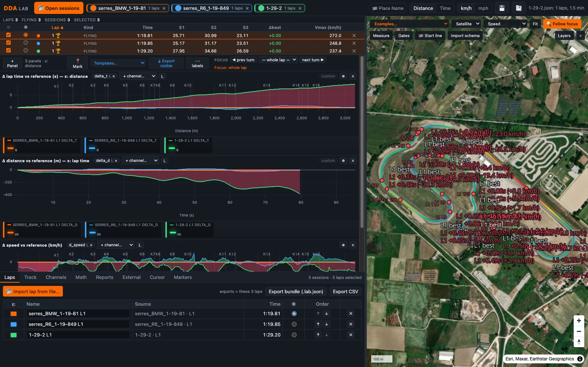
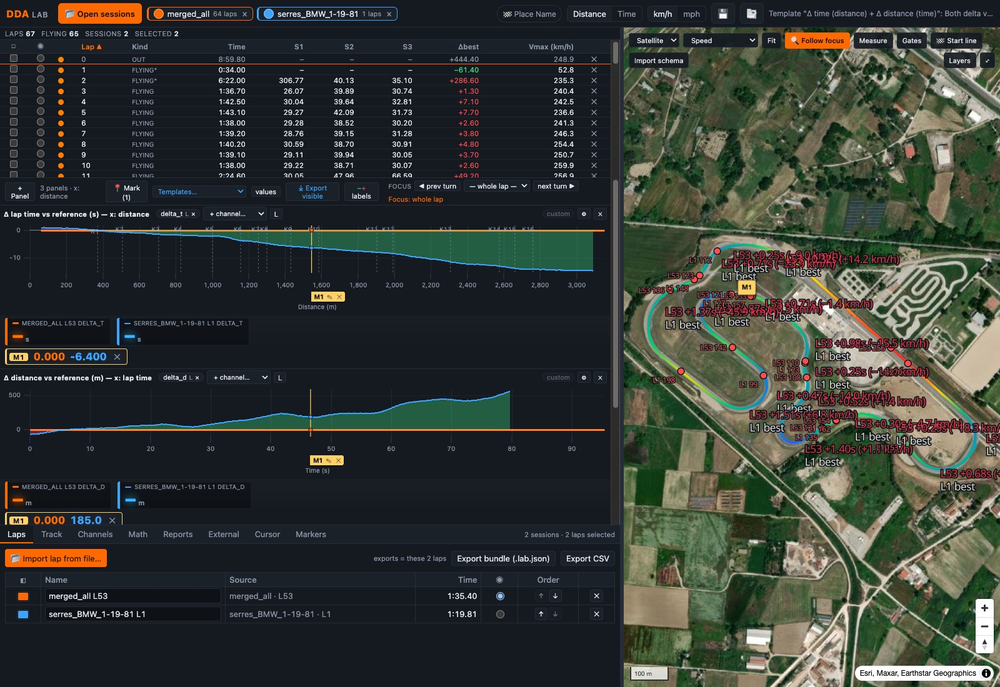
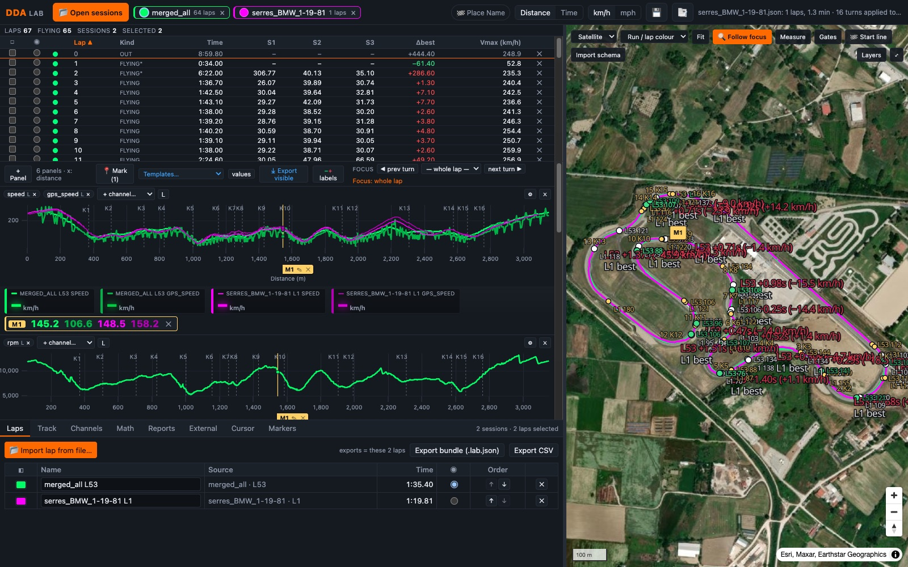

Satellite map with turns
Esri imagery, the track vectorised from your own GPS, turn names and apexes, brake and throttle points with km/h, gain/loss per turn written on the map.
Free · runs in your browser · no account
Open your Ducati DDA files, RaceChrono or onboard-video telemetry and compare laps on a satellite map with turns and apexes. Δ time, Δ distance, speed, lean, throttle and your own math channels — the analysis tools of a data engineer, made simple.
Works with .dda (Ducati DDA / DDA+ GPS), DDA_Reader .json / .csv exports, RaceChrono & onboard-video JSON, .lab.json bundles.

Esri imagery, the track vectorised from your own GPS, turn names and apexes, brake and throttle points with km/h, gain/loss per turn written on the map.
Overlay any laps from any files. Pick a reference lap: every chart shows Δ time, Δ speed, Δ lean, Δ throttle against it — stock-chart style, green where you gain, red where you lose.
Ready-made templates: time gained along the track, or metres ahead/behind at the same lap time. Each chart panel can have its own x axis.
~60 functions, filters (low-pass, Savitzky-Golay, moving average), integrals with your own x, per-lap or per-run formulas, and ref() / run() to subtract or divide one run by another.
Pin any point: values stay fixed under every chart, drag the flag along the lap, add a note. Markers are saved per file and travel in exports.
Live cursor values in large colour-coded cards, per-panel Y zoom by dragging the axis, wheel / middle / right-button zoom, focus on a single turn.
Merge many DDA runs, delete bad laps, name and colour laps, move the start line, edit turns. Exports contain exactly what you see.
Sector tables, theoretical best, turn metrics; CSV of the visible range, per-lap CSV, .lab.json bundles that reopen anywhere.

Open the app and use the Examples… menu on the map:

Serres Racing Circuit (Greece) is 3.186 km with 16 turns. MotoRaceLaps ships with three complete laps so you can study the track before you ride it: where a 1000 cc superbike (BMW S1000RR, 1:19.81) brakes for K1, how a 600 cc supersport (Yamaha R6, 1:19.849) carries corner speed through K5–K6, and what an intermediate rider (1:29.2) does differently in every turn. Overlay them, put the cursor on a turn and read braking point, turn-in speed, apex speed, throttle-on point and the time gained or lost — on the satellite map and on the charts.
DDA Lab decodes and analyses files inside your browser. Nothing you open is uploaded. Only track models and schema images you choose to save go to the server. The app is open source (MIT) and can also run on your own computer.